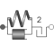

ElastoBacklash2Backlash connected in series to linear spring and damper (backlash is modeled with elasticity; at start of contact the flange torque can jump, contrary to the ElastoBacklash model) |

|
Information
This information is part of the Modelica Standard Library maintained by the Modelica Association.
This element consists of a backlash element connected in series to a spring and damper element which are connected in parallel. The spring constant shall be non-zero, otherwise the component cannot be used.
In combination with components IdealGear, the ElastoBacklash2 model can be used to model a gear box with backlash, elasticity and damping.
During initialization, the backlash characteristic is replaced by a continuous approximation in the backlash region, in order to reduce problems during initialization, especially for inverse models.
If the backlash b is smaller as 1e-10 rad (especially, if b=0), then the backlash is ignored and the component reduces to a spring/damper element in parallel.
In the backlash region (-b/2 ≤ flange_b.phi - flange_a.phi - phi_rel0 ≤ b/2) no torque is exerted (flange_b.tau = 0). Outside of this region, contact is present and the contact torque is basically computed with a linear spring/damper characteristic:
desiredContactTorque = c*phi_contact + d*der(phi_contact)
phi_contact = phi_rel - phi_rel0 - b/2 if phi_rel - phi_rel0 > b/2
= phi_rel - phi_rel0 + b/2 if phi_rel - phi_rel0 < -b/2
phi_rel = flange_b.phi - flange_a.phi;
This torque characteristic leads to the following difficulty:
- If the damper torque becomes larger as the spring torque and with opposite sign, the contact torque would be "pulling/sticking" which is unphysical, since during contact only pushing torques can occur.
In the literature this issue seems to be not discussed. For this reason, the most simple approach is used in the ElastoBacklash2 model, by slightly changing the linear spring/damper characteristic to:
// Torque characteristic when phi_rel > phi_rel0
if phi_rel - phi_rel0 < b/2 then
tau_c = 0; // spring torque
tau_d = 0; // damper torque
flange_b.tau = 0;
else
tau_c = c*(phi_rel - phi_rel0); // spring torque
tau_d = d*der(phi_rel); // damper torque
flange_b.tau = if tau_c + tau_d ≤ 0 then 0 else tau_c + tau_d;
end if;
Note, when sticking would occur (tau_c + tau_d ≤ 0), then the contact torque is explicitly set to zero.
This model of backlash is slightly different to the ElastoBacklash component:
- An event occurs when contact occurs or when contact is released (contrary to the ElastoBacklash component).
- When contact occurs, the torque changes discontinuously, due to the damping. The damping is larger as for the ElastoBacklash component (for the same damping coefficient), because the ElastoBacklash component has a heuristic to avoid the discontinuity of the torque when contact occurs.
- For some models, the ElastoBacklash2 component leads to faster simulations (as compared when using the ElastBacklash component).
See also the discussion State Selection in the User's Guide of the Rotational library.
Parameters (7)
| phi_nominal |
Value: 1e-4 Type: Angle (rad) Description: Nominal value of phi_rel (used for scaling) |
|---|---|
| stateSelect |
Value: StateSelect.prefer Type: StateSelect Description: Priority to use phi_rel and w_rel as states |
| useHeatPort |
Value: false Type: Boolean Description: =true, if heatPort is enabled |
| c |
Value: Type: RotationalSpringConstant (N·m/rad) Description: Spring constant (c > 0 required) |
| d |
Value: Type: RotationalDampingConstant (N·m·s/rad) Description: Damping constant |
| b |
Value: 0 Type: Angle (rad) Description: Total backlash |
| phi_rel0 |
Value: 0 Type: Angle (rad) Description: Unstretched spring angle |
Connectors (3)
| flange_a |
Type: Flange_a Description: Left flange of compliant 1-dim. rotational component |
|
|---|---|---|
| flange_b |
Type: Flange_b Description: Right flange of compliant 1-dim. rotational component |
|
| heatPort |
Type: HeatPort_a Description: Optional port to which dissipated losses are transported in form of heat |
Used in Examples (1)
|
Modelica.Mechanics.Rotational.Examples Example to demonstrate backlash |